Take Control of Your Simulator.
Stop wrestling with sluggish content managers, cryptic config files, and contradictory setup guides. SceneryX is your all-in-one flight companion—combining intelligent airport scenery library management with dynamic 2D and VR performance optimization. Seamlessly organize installed packages, isolate SimBrief route corridors, automate GSX Pro profiles, and balance CPU-to-GPU headroom in real time for buttery-smooth, stutter-free flights from takeoff to touchdown.
The Complete Scenery Hub & Performance Suite
Twelve core pillars engineered to organize your airport library, optimize Windows & hardware baselines, eliminate micro-stutters, and benchmark flight telemetry in real time.
One Centralized Dashboard for 2D Cockpits and VR Headsets
End the configuration nightmare. Replace dozens of clunky simulator sub-menus and fragile config file edits with clean, instant, responsive toggles. Maintain separate, optimized profiles for 4K desktop flying and immersive VR sessions without touching UserCfg.opt manually or enduring endless simulator reboots.
-
Automated
UserCfg.optsynchronization with zero simulator restarts - Independent dedicated profiles for standard 2D displays and OpenXR VR headsets
- “My Rig” hardware auto-tuning balancing CPU MainThread draw calls against GPU rasterization
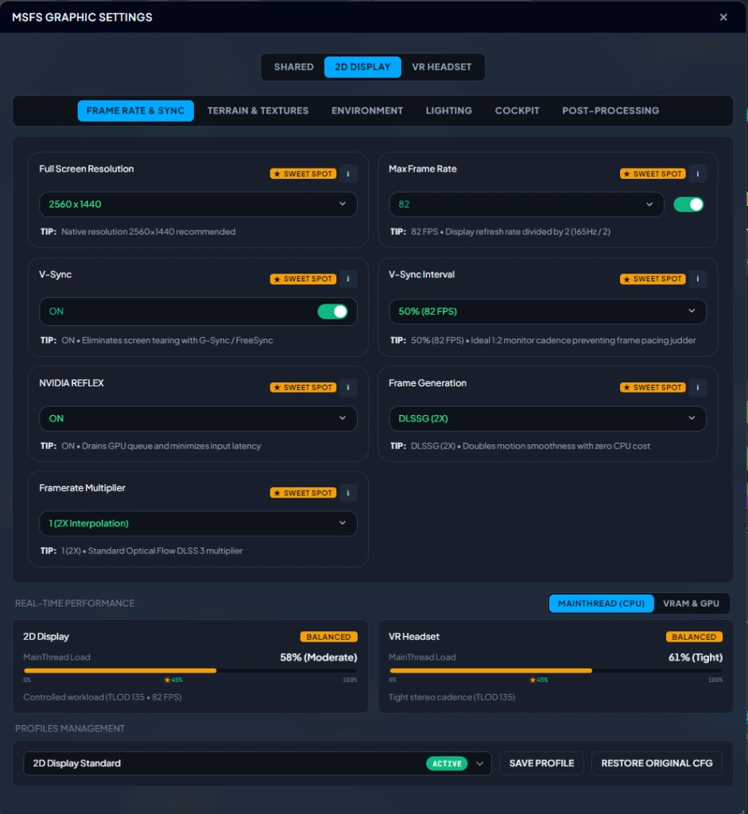
Effortless Addon Switching & Multi-Store Discovery
Permanently eliminate scenery conflicts and duplicated airports. When multiple editions exist for a destination—such as third-party payware, official Asobo handcrafted streamed packages, or MSFS default scenery—SceneryX lets you choose your active version with a single click. Discover and download verified community enhancements on Flightsim.to directly from the airport radial menu, or browse live pricing and vendor links across premier stores including Orbx Direct, iniBuilds, Contrail, simMarket, and Aerosoft without ever opening an external browser.
- Single-click version switcher resolving conflicts between Payware, Asobo Streamed, and Default sceneries
- Direct Flightsim.to freeware hub integration accessible right inside the airport menu
- Multi-store price comparison and direct access across Orbx, iniBuilds, Contrail, simMarket, and Aerosoft
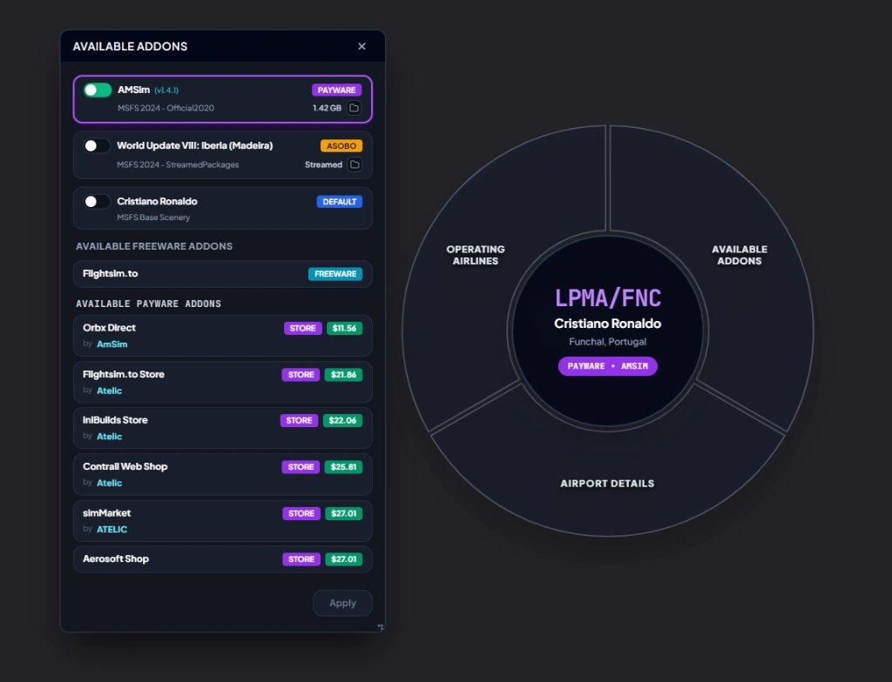
Zero-Friction GSX Pro Deployment & Deep Airport Metrics
Say goodbye to tedious manual file extraction and deep AppData directory hunting. Simply drag and drop any .zip archive or .ini configuration file directly onto the airport card for automatic, instantaneous GSX Pro installation. Missing a profile? Search Flightsim.to with a single click for verified profiles tailored specifically to your active airport publisher, while inspecting detailed runway lengths, surfaces, elevation data, ILS categories, and personal star ratings.
-
Drag-and-drop installer instantly placing
.zipor.iniprofiles in the correct GSX directories - Targeted Flightsim.to lookups automatically filtered by your installed airport developer
- Complete airport dossier featuring runway dimensions, elevation, custom star ratings, and purchase cost tracking
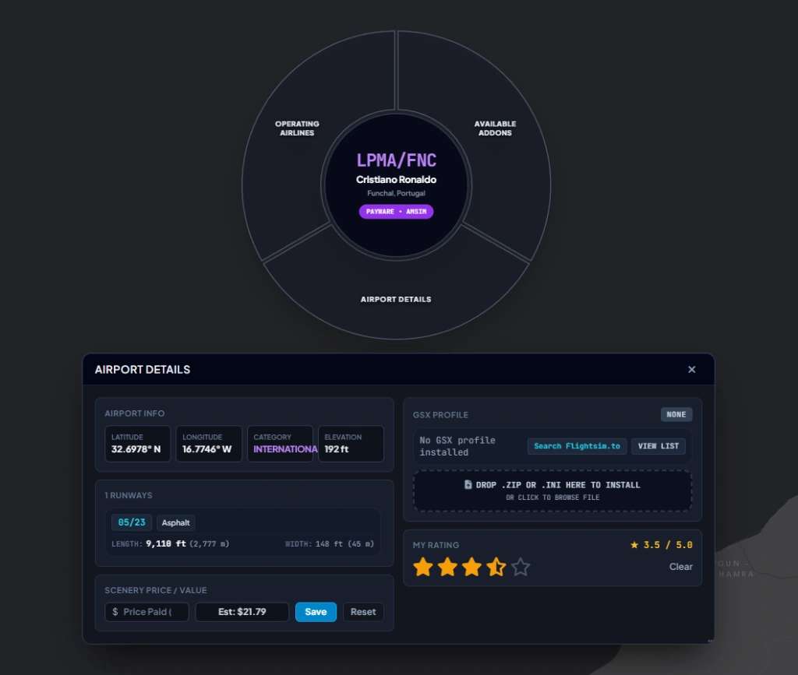
Explore Real Airline Routes & Visualize Scenery Coverage
Bring genuine airline realism to every flight. Click on any departure airport worldwide—like Istanbul (LTFM)—to inspect all commercial carriers operating from that hub, complete with official airline logos. Selecting any carrier instantly projects its active destination network onto the interactive map, color-coded by your scenery library status: Payware (Owned), Freeware, Asobo Handcrafted, or Default. Effortlessly identify where you have premium airports installed and plan authentic airline rotations.
- Real-world carrier database displaying all operating airlines and official insignias for any origin
- Instant scenery ownership audit sorting destination hubs into Payware, Freeware, Asobo, and Default
- Interactive global route projection with one-click filtering to fly authentic scheduled flights
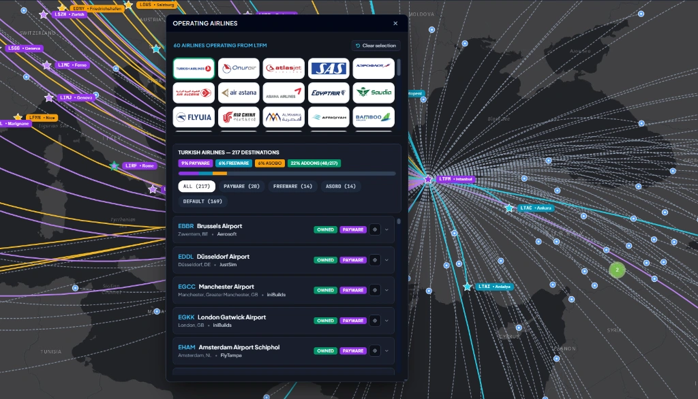
Dynamic Scenery Isolation: Direct A–B, Corridor & SimBrief
Loading thousands of inactive airports across the globe saturates system memory and starves your GPU. SceneryX isolates strictly the sceneries required for your flight, reclaiming gigabytes of RAM and precious VRAM before departure. Select Direct A–B for point-to-point legs, calculate an En-Route Corridor to keep departure, arrival, and emergency divert fields active along your track, or import your live SimBrief OFP with a single click. The result: lightning-fast simulator loading times and rock-solid, stutter-free approaches.
- Three tactical route modes: lean Direct A–B, dynamic En-Route Corridor, or instant SimBrief OFP import
- Over 1.5+ GB of RAM and 360+ MB of VRAM reclaimed by deactivating unneeded global sceneries
- Radical stutter elimination during descent and touchdown by preventing memory bottlenecks
Slice Your Global Library with Multi-Criteria Radial Filters
Navigate thousands of worldwide airports without overwhelming lists or cumbersome search fields. SceneryX introduces an ergonomic radial filter dial integrated directly into the interactive world map. Slice your entire scenery collection across 6 concurrent dimensions: isolate Pricing Models (Payware, Freeware, Asobo, Default), filter by Scenery Source (Community, Official, StreamedPackages), segment by Geographic Region, refine by Airport Classification, target airfields with active GSX Pro Profiles, or filter by your personal Star Ratings. Interactive map clusters update dynamically in real time, letting you pinpoint the ideal destination for your next flight in seconds.
- 6-axis radial filter dial: Pricing Model (Payware/Freeware/Asobo/Default), Source, Region, Type, GSX, and Rating
- Real-time color-coded map markers: Purple for Payware, Gold for Asobo Handcrafted, Teal for Freeware, and Slate for Default
- Intelligent dynamic map clustering aggregating dense airspaces into responsive badges for silky-smooth global navigation
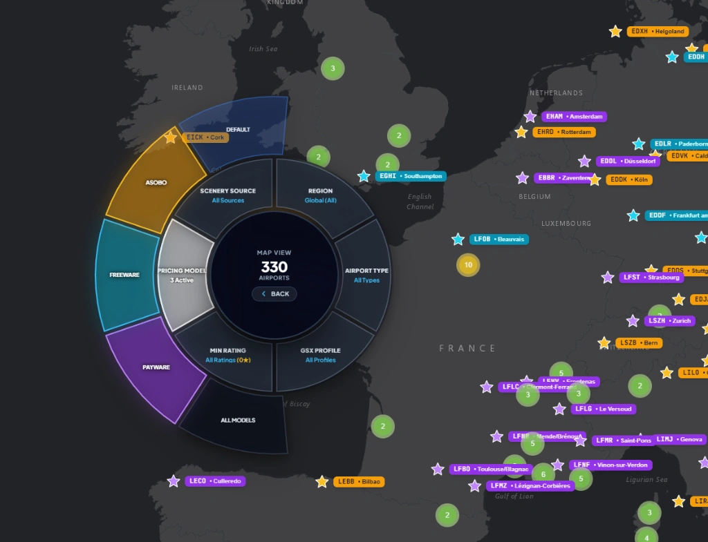
Altitude-Aware TLOD & OLOD Governor for 2D and VR
Keep frame rates locked on final approach without sacrificing visual horizons at cruise altitude. The Smart Dynamic Terrain LOD Engine adjusts Terrain LOD (TLOD) and Objects LOD (OLOD) in real time via SimConnect based on your aircraft’s exact altitude above ground. Configure independent 2D Display and VR Headset profiles with custom transition altitudes (e.g., 3,000 ft), minimum Floor baselines for heavy airport hubs, and high-detail Cruise ceilings. When flying into dense weather or complex megahubs, the Target FPS Governor and Auto Cloud Recovery automatically modulate rendering overhead under heavy frame strain—saving your custom settings into instant presets like Balanced Airliner.
- Independent 2D Display and VR Headset thresholds with real-time Floor-to-Cruise dynamic scaling (TLOD up to 400, OLOD up to 300)
- Target FPS Governor with Auto Cloud Recovery that adaptively reduces volumetric cloud strain when frames dip below your setpoint
- One-click profile management (e.g., Balanced Airliner, Heavy VR, Bush VFR) with live in-sim TLOD & OLOD readouts
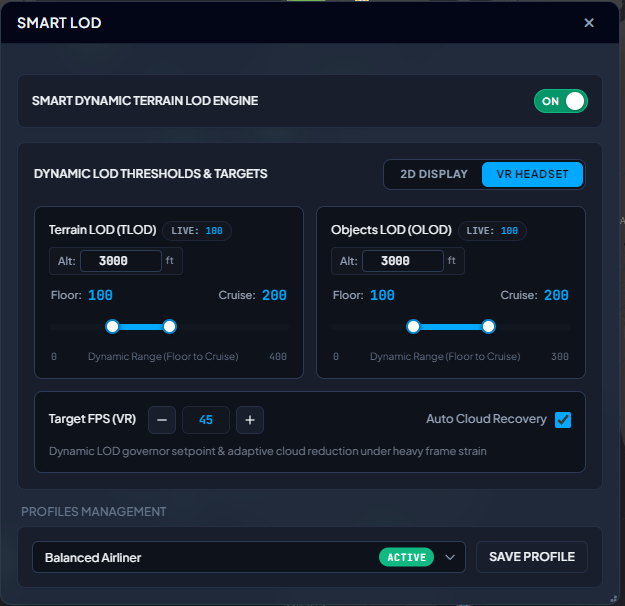
Complete 7-Point Windows & GPU OS-Level Diagnosis
Even the fastest hardware will stutter if Windows is misconfigured for flight simulation. SceneryX’s System Optimizer scans and tunes 7 critical operating system and graphics driver parameters tailored specifically to your detected hardware: verifying Hardware-Accelerated GPU Scheduling (HAGS) required for DLSS 3 Frame Generation and low display latency; enabling Windows Game Mode to prioritize MSFS CPU/GPU threads while pausing background OS tasks; enforcing the Ultimate Performance Power Plan to prevent CPU core parking and clock throttling mid-flight; auditing active Re-Size BAR (ReBAR) for direct full-VRAM CPU access; checking DirectX 12 Shader Cache capacity (recommending 10 GB or Unlimited to eliminate shader compilation stutters); linking directly to your NVIDIA App / GPU Control Panel; and ensuring Virtualization-Based Security (VBS / HVCI) is disabled for 0% CPU throughput loss on your MainThread.
- OS & CPU throughput tuning: Ultimate Performance Power Plan (zero core parking), Windows Game Mode toggle, and VBS / HVCI Core Isolation audit (0% CPU loss)
- GPU pipeline verification: HAGS status for DLSS 3 Frame Generation, active Re-Size BAR (ReBAR) full VRAM access, and DirectX 12 Shader Cache sizing
- 1-click System Scan with instant Optimal/Warning status badges and direct shortcuts to Windows & NVIDIA App settings
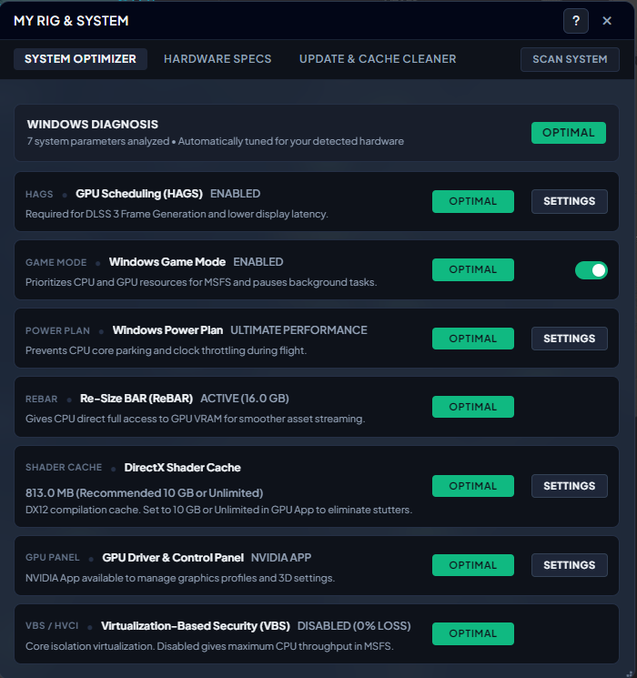
Deep Hardware Baseline Audit & Runtime Accelerators
Eliminate hardware bottlenecks with a complete architectural x-ray of your flight simulation rig. SceneryX automatically detects and evaluates your entire system baseline—confirming optimal balance across your CPU (cores and thread topology), GPU (VRAM capacity and active driver version), System RAM (frequency and XMP Enabled verification), and NVMe SSD storage headroom on your MSFS drive. Beyond core silicon, SceneryX audits your Primary Display & multi-monitor refresh cadence, connected VR Headset (such as Pimax Crystal Light at 90 Hz), Full-Duplex Ethernet network latency & ping for smooth photogrammetry streaming, and active DirectX 12 Runtime Accelerators (ReBAR, HAGS, exact DLSS build version, and Frame Generation).
- Silicon & memory telemetry: CPU core/thread count, GPU VRAM & driver build, RAM MHz with XMP verification, and NVMe SSD free capacity
- Display, VR & network readiness: multi-screen Hz calibration, VR headset active cadence, and Ethernet link speed with live millisecond ping
- Runtime Accelerators summary verifying DirectX 12, ReBAR ON, HAGS ON, active DLSS version (e.g., v310.6), and Frame Generation status
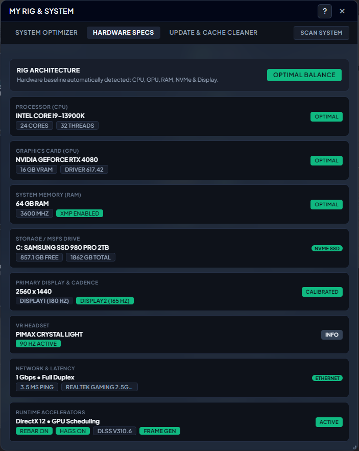
1-Click Community Quarantine & Multi-Layer Cache Purge
Simulator updates and GPU driver upgrades are the number one cause of sudden micro-stutters, pink checkerboard textures, and aircraft crashes. SceneryX protects your installation with Safe Update Mode (Community Quarantine)—letting you safely park all MSFS 2020 and MSFS 2024 Community folders before updating the simulator and restore them in a single click. When stutters or visual artifacts appear, the MSFS & Shader Cache Cleaner purges 6 critical cache layers individually or all at once: SceneryIndexes (*.dat) to fix elevation spikes and duplicate buildings after World Updates, WASM Compiled Aircraft Caches for study-level airliners (PMDG, Fenix, iniBuilds) while strictly preserving your throttle calibrations and user configs, the monolithic MSFS Rolling Cache (ROLLINGCACHE.CCC), MSFS 2024 StreamedPackages & ModelLib Caches, unlocked DirectX 12 & NVIDIA/AMD GPU Shader Caches (D3DSCache, DXCache, GLCache), and Obsolete UserCfg.opt Backups.
- Safe Update Mode (Community Quarantine): park and restore all Community & Community2024 folders in 1 click before official MSFS updates
- Deep simulator cache cleaner: SceneryIndexes (*.dat), WASM compiled aircraft binaries (preserving custom configs), Rolling Cache, and MSFS 2024 Streamed/ModelLib caches
- 1-click DirectX 12 & GPU Shader Cache purge (D3DSCache, DXCache, GLCache) and obsolete UserCfg.opt backup cleanup
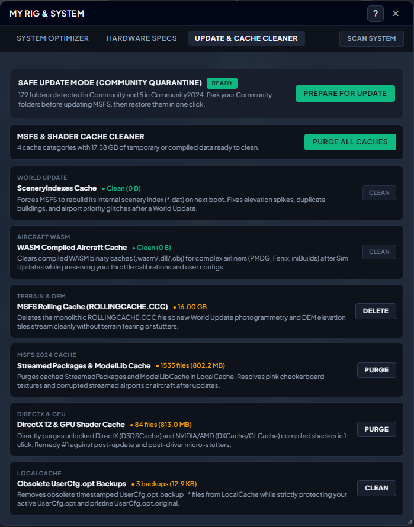
Real-Time SimConnect Performance Gauges & Flight Benchmarks
Track your simulator’s vital signs in real time without intrusive overlays cluttering your cockpit windshield. Connected directly via native SimConnect alongside the Smart LOD governor, Live Flight Monitoring logs your active flight timer, detected aircraft model (e.g., Fenix A320 CFM WF), departure origin, and active scenery optimization mode. Monitor instantaneous Displayed FPS alongside raw Base FPS (essential for evaluating Frame Generation multipliers), CPU MainThread latency in milliseconds, GPU & CPU load and temperatures (°C), VRAM allocation, and active cache footprint. A live 30-Second Trend graph visualizes frame pacing stability at a glance, while completed flights can be archived into Recorded Flight Reports for post-flight analysis.
- Dual FPS telemetry comparing Displayed FPS vs. Base FPS alongside real-time CPU MainThread frame time in milliseconds
- Live hardware sensors for GPU & CPU utilization, core temperatures (°C), VRAM consumption, and rolling cache usage
- Continuous 30-second stability trendline and Recorded Flight Reports to review performance benchmarks after touchdown
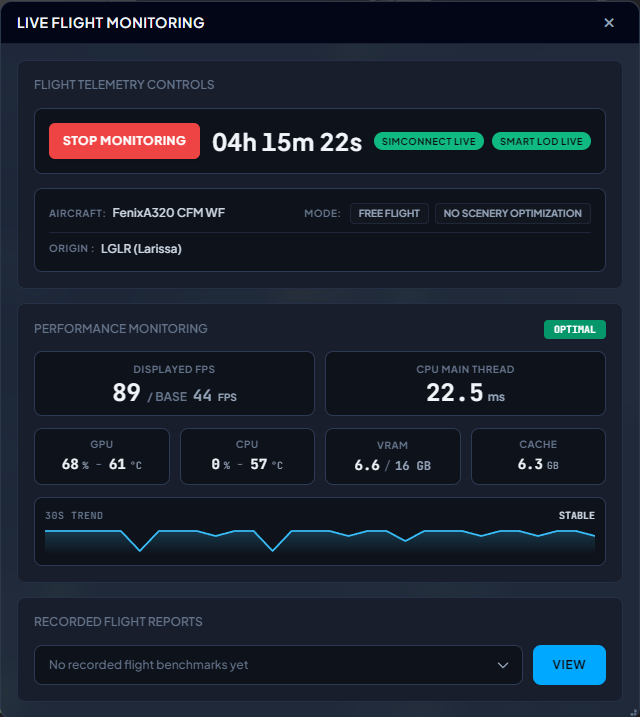
Granular Smart LOD Step Analysis & Multi-Axis Flight Graphs
After touchdown, dive into a comprehensive engineering debrief of your entire sector. Every recorded flight report opens with a Smart LOD Trigger Analysis & Step Efficiency table that quantifies the exact FPS Delta (Gain/Loss) and MainThread Delta (ms) achieved at each altitude transition—from the 500 ft Takeoff/Climb threshold up to the 5,000 ft Cruise threshold. Review 7 detailed hardware summary cards displaying average, minimum, and peak readouts across Displayed & Base FPS (Frame Generation), CPU MainThread latency (ms), GPU VRAM (MSFS vs. Total Rig allocation), Physical & Committed RAM, GPU Power draw (Watts), and GPU/CPU System Thermals (°C). Below, an interactive, zoomable Smoothness & Latency timeline plots Displayed FPS, Base FPS, and MainThread (ms) across the entire flight duration.
- Smart LOD Trigger Analysis table quantifying exact FPS gains and MainThread millisecond deltas at Takeoff/Climb and Cruise transitions
- 7 post-flight telemetry cards with Average, Peak, and Min metrics: Frame Gen/Base FPS, MainThread (ms), MSFS/Total VRAM, Physical & Committed RAM, GPU Watts, and Thermals (°C)
- Interactive, zoomable Smoothness & Latency timeline plotting Displayed FPS, Base FPS, and MainThread (ms) over elapsed flight time
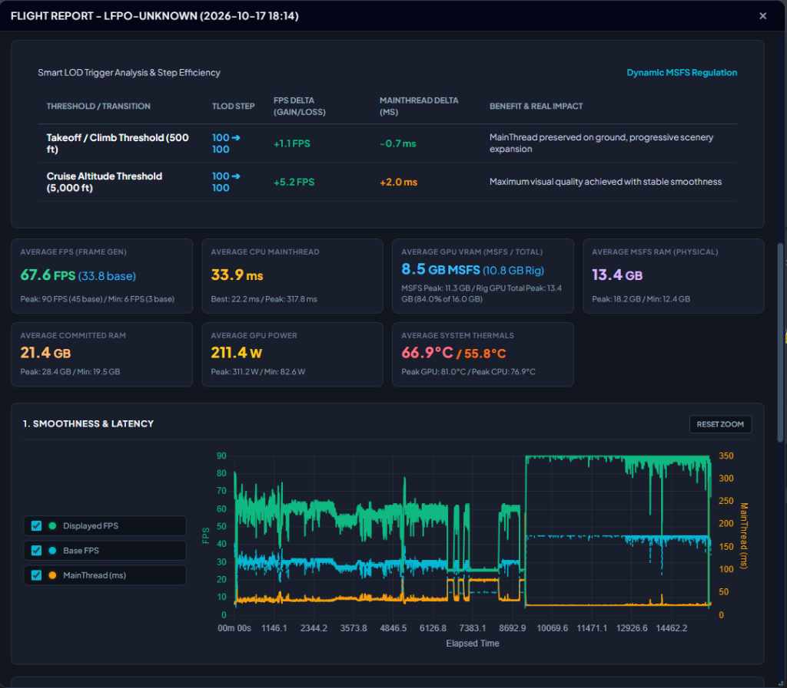
Full Cockpit Control Without Ever Pressing Alt+Tab
Stay 100% immersed on the flight deck—whether flying on a 2D monitor or inside a VR headset. Accessible directly from the native Microsoft Flight Simulator top toolbar, the SceneryX In-Game Panel brings real-time Smart LOD Regulation and Performance Monitoring right into your cockpit window (complete with native minimize, multi-monitor pop-out, and close controls). Fine-tune dual-handle TLOD (0–400) and OLOD (0–300) Floor and Cruise sliders on the fly, adjust your transition altitude (ft AGL), or toggle Auto Cloud Recovery without ever leaving your seat. Below, the integrated Performance Monitoring HUD displays live Displayed FPS vs. Base FPS, CPU MainThread latency (ms), GPU & CPU load and temperatures (°C), VRAM allocation, Cache footprint, and a live 30-Second Trend—letting you trigger Start Monitoring flight recording directly from the glareshield.
- Native MSFS toolbar integration for 2D & VR cockpits — zero Alt+Tab interruptions, movable, and multi-monitor pop-out ready
- Live in-cockpit Smart LOD controls: dual-handle Floor & Cruise sliders for TLOD/OLOD, custom ft AGL step selectors, and Auto Cloud Recovery toggle
- Embedded cockpit telemetry HUD (Displayed/Base FPS, MainThread ms, GPU/CPU °C, VRAM, Cache, 30s Trend) with 1-click Start Monitoring
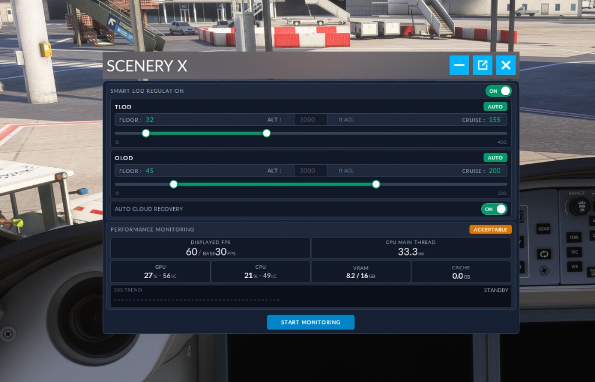
100% Non-Destructive Architecture
Your simulator installation is sacred. SceneryX operates with complete architectural safety: no game files modified, no folder renaming, zero residual dependencies.
Zero Folder Renaming
Unlike legacy addon managers that rename physical folders risking broken symlinks or orphaned dependencies, SceneryX leaves your file system and directories 100% untouched.
Dedicated Session Manifest
Scenery activation operates via an isolated session Content.xml manifest. Official simulator core configurations remain strictly untouched and read-only.
SimConnect In-Memory
Dynamic LOD scaling and performance optimizations run strictly in volatile memory via official SimConnect APIs. No binary patching or persistent file alterations.
1-Click Instant Reset
Quit SceneryX or click "Restore All" at any time to instantly revert your entire simulator library to its factory state in under one second.
Lifetime License - €9.90 (+VAT)
Engineered for Windows 10 & 11. Full lifetime access to the desktop suite, in-game cockpit widget, and flight optimization engine. No recurring monthly subscriptions.
Secure checkout via Credit Card or PayPal on Gumroad. Instant Windows license delivered straight to your email.
Frequently Asked Questions
Detailed, technical answers regarding SceneryX performance, architecture, and simulator compatibility.
How does SceneryX unify MSFS settings for both 2D displays and VR?
UserCfg.opt file or endure multiple simulator restarts. SceneryX introduces an independent dual-profile system. You can establish crisp 4K desktop parameters (DLSS Quality, ultra shadows, high TLOD) for standard monitor flying, while maintaining a dedicated OpenXR configuration (foveated rendering, custom per-eye render resolution, motion reprojection toggles) for your VR headset. SceneryX synchronizes these settings safely with zero risk of config corruption and without requiring repeated simulator reboots.
How does SceneryX manage MSFS 2024 streamed packages versus local sceneries?
StreamedPackages containers labeled with cryptic cryptographic GUIDs. The native simulator Content Manager gives you no clear distinction between what is cached on disk and what streams over the wire. SceneryX de-anonymizes these packages by inspecting simulator manifest caches. It clearly displays whether an airport is hosted on your local NVMe drive (Community or Official) or streamed from the cloud. This gives you absolute control to prioritize high-fidelity local payware over low-resolution streamed photogrammetry and prevents duplicate scenery collisions.
How does the automatic GSX Pro profile matching work?
.ini or .zip profile into SceneryX, the engine reads the airport ICAO, terminal gates, parking positions, and author signature. It automatically differentiates between default Asobo airports and third-party payware editions (e.g. Flightbeam, Pyreegue, or iniBuilds), moving the profile into the exact folder path at %APPDATA%\Virtuali\GSX\MSFS. Furthermore, SceneryX runs a health audit to identify and eliminate obsolete, duplicate, or corrupted GSX profile files.
Why doesn't SceneryX include flight planning or airport charts?
Does SceneryX modify my simulator installation files permanently?
Content.xml manifests, while Dynamic Smart LOD scaling operates exclusively in runtime memory through official SimConnect APIs. Closing SceneryX or clicking the "Restore All" button instantly restores your simulator to its factory configuration in under one second.